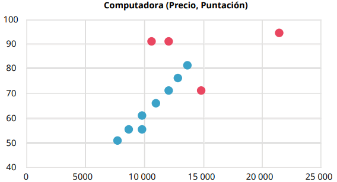

Interpretando datos
Interpretando los siguientes diagramas de dispersión, responde las preguntas de los planteamientos e identifica los posibles valores atípicos.
a) Se va a realizar la compra de una computadora para la oficina de diseño gráfico donde trabajas, y se te pide tomar la decisión de compra. Un compañero de trabajo ya se encargó de realizar la investigación en cuanto a precios y puntaje de calidad, y te presenta dicha información en el siguiente diagrama de dispersión:

a) De los potenciales valores atípicos que están en rojo, ¿cuál es el que representa la mejor opción para realizar la compra y por qué?